|
Overview
|
|
Overview
|
|
How To |
Pathway Browser |
 Subcellular Search |
 Functional Search |
 Accession Search |
 Statistics |
 About |
The quality standard database (QSDB) provides a pathway based approach to access proteomics assays for targeted proteomics. Currently, we are acquiring mass spectra for all proteins within the mouse organism. Our mass spetrometer is a QExactive Plus or HF, capable to produce high-resolution high-mass accuracy LC-MS/MS spectra.
Responsible people for this database are:
Dominik Kopczynski: Implementation of both front- and backend
Andreas Hentschel: Acquisition and processing of the data
Robert Ahrends: Coordination
The ISAS team is supported by the German network of bioinformatics services (de.NBI). If you have questions, suggestions or other issues, please contact us.
1. Liability limitation
Although we acquired our data with highest accurateness, we take no responsibility for the correctness, completeness or up-to-dateness of this data.
The usage of the downloadable data available on this web page takes place at the users own risk.
2. External links
This web page contains links forwarding to external web pages.
For all external web pages we disclaim liability.
During the linking no statutory violation was evident.
As soon as a violation emerges, we delete these links.
3. Copyright
The content of this web page is subject to the German copyright law and ancillary copyright.
Every inadmissible utilization defined by the German copyright law and ancillary copyright is forbidden.
This includes the disposal of the downloadable data.
Download and utilization of the available data for researching purposes is explicitly allowed.
4. Privacy
For statistical purposes, we record the number of visits to this web page as well as the number of downloads.
To ensure an unbiased record, we store a hash value of your IP address for several minutes.
Since this method is not reversible, restoring your IP address is not possible, hence this value does not belong to personal-related data.
We do not sell or hand out our collected statistical data to third parties.
The usage, selling or handing of the contact data written in this imprint is not allowed.
|
Paste UniProt accession numbers:
|
Filter criteria:
| ||
|
|
|||
|
Select subcellular compartment(s):
Hold [ctrl] for multiple selection. |
Filter criteria:
| ||
|
|
|||
|
Select protein function(s): |
Filter criteria:
| ||
|
|
|||